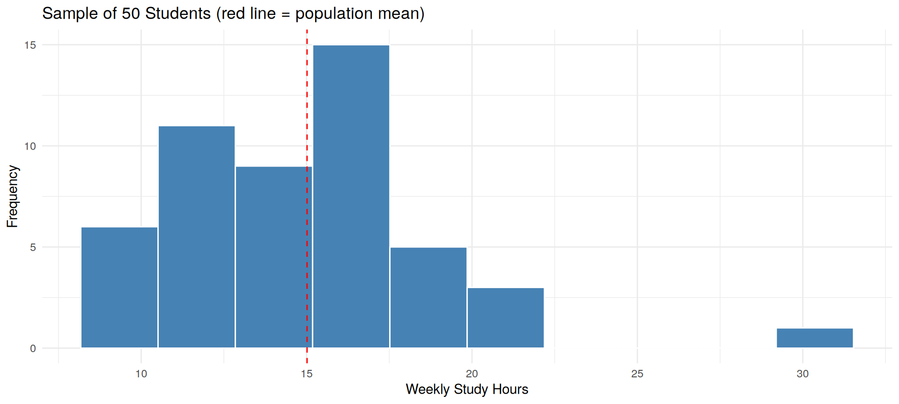
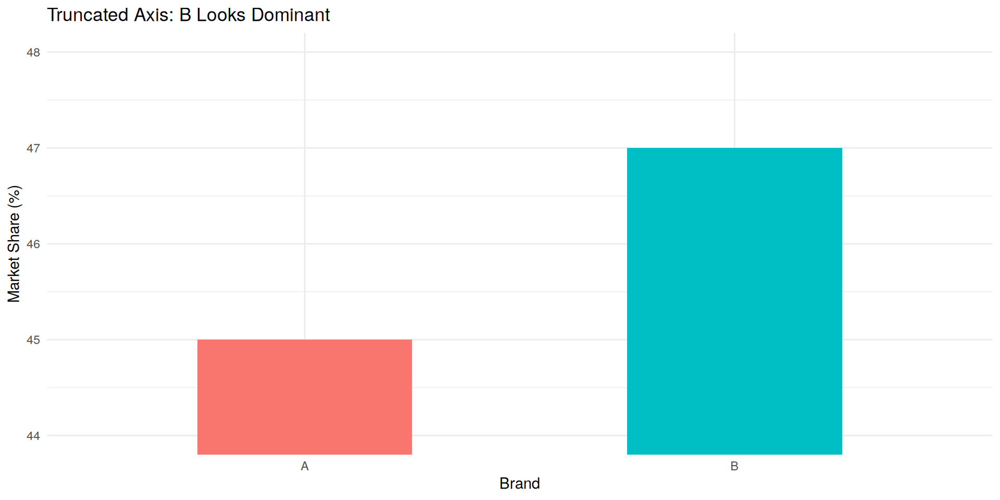
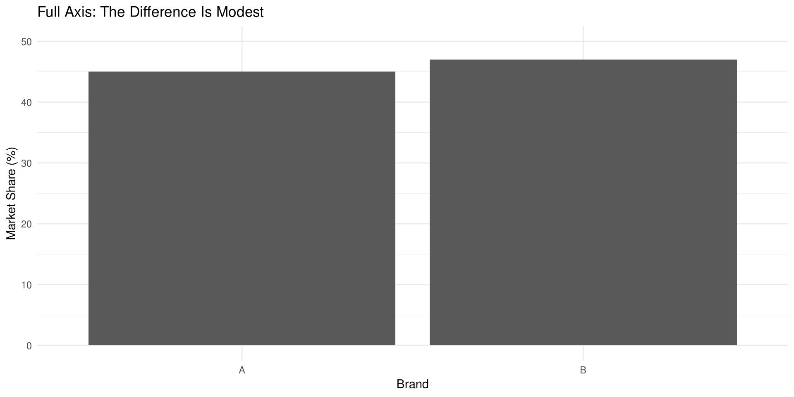
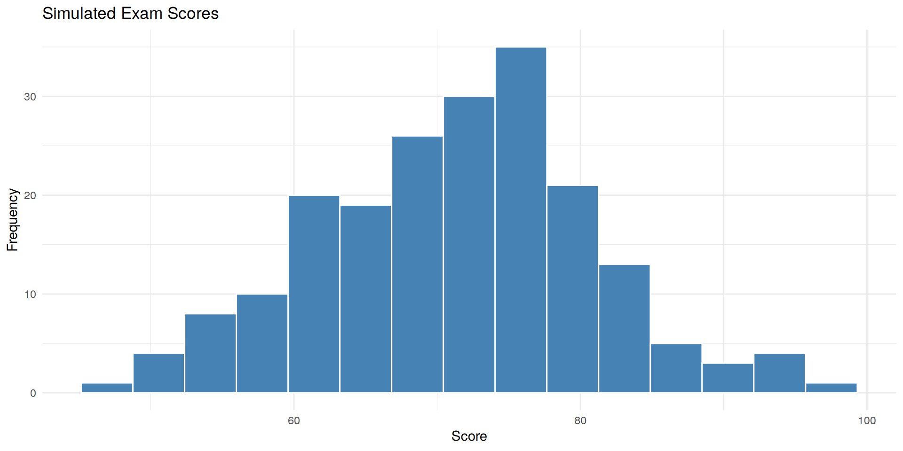

Population mean (parameter) Sample mean (statistic)
15.01470 14.81155 Statistics
Chapter 1: The Nature of Probability and Statistics
Yu-You Liou
Shih Chien University
2026-09-20
Overview
Chapter 1 introduces the fundamental nature of statistics — what statistics is, the kinds of data it works with, how data are collected, how studies are designed, and how statistical results can be used or misused.
| Section | Topics |
|---|---|
| 1-1 | Descriptive and inferential statistics |
| 1-2 | Variables and types of data |
| 1-3 | Data collection and sampling techniques |
| 1-4 | Experimental design (observational and experimental studies; uses and misuses of statistics) |
| 1-5 | Computers and calculators |
Chapter Objectives
After completing this chapter, you should be able to
- Demonstrate knowledge of statistical terms.
- Differentiate between the two branches of statistics.
- Identify types of data.
- Identify the measurement level for each variable.
- Identify the four basic sampling techniques.
- Explain the difference between an observational and an experimental study.
- Explain how statistics can be used and misused.
- Explain the importance of computers and calculators in statistics.
Section 1-1: Descriptive and Inferential Statistics
What Is Statistics?
Statistics appears everywhere — sports records, opinion polls, medical findings, unemployment rates, weather forecasts. All of these begin with data: values that have been collected and must be organized before they can tell us anything.
Statistics
Statistics is the science of conducting studies to collect, organize, summarize, analyze, and draw conclusions from data.
Three reasons to study statistics:
- To read and understand the statistical studies performed in your own field, which requires knowing its vocabulary, symbols, concepts, and procedures.
- To conduct research — design experiments; collect, organize, analyze, and summarize data; make predictions; and communicate the results in your own words.
- To become a better consumer and citizen — making intelligent decisions about products, government spending, and public claims.
Basic Vocabulary
Variables and Data
- A variable is a characteristic or attribute that can assume different values.
- Data are the values (measurements or observations) that the variables can assume.
- A collection of data values forms a data set; each value in the data set is a data value (or datum).
- Variables whose values are determined by chance are called random variables.
An insurance company cannot predict which cars it insures will be in an accident, but it knows that on average 3 out of every 100 insured cars are involved in an accident each year. Chance governs the individual case; the long-run pattern is stable enough to price policies on.
Populations and Samples
In most studies it is impractical — sometimes impossible — to examine every subject of interest. Researchers therefore study a subgroup and generalize from it.
Population, Census, and Sample
- A population consists of all subjects (human or otherwise) that are being studied.
- When data are collected from every subject in the population, it is called a census.
- A sample is a group of subjects selected from a population.
Bias
A sample is biased if its results are radically different from those of a census, or if it does not represent the population from which it was selected. How to select a sample properly is the subject of Section 1-3.
The Two Branches of Statistics
Descriptive Statistics
Descriptive statistics consists of the collection, organization, summarization, and presentation of data.
Inferential Statistics
Inferential statistics consists of generalizing from samples to populations, performing estimations and hypothesis tests, determining relationships among variables, and making predictions.
Probability and Hypothesis Testing
Inferential statistics rests on probability theory.
- Probability is the chance of an event occurring — the mathematical language of uncertainty (Chapter 4).
- Hypothesis testing is a decision-making process for evaluating claims about a population, based on information obtained from samples (Chapter 8).
Inferential statistics also determines relationships among variables. A landmark public-health report on smoking and health concluded that there is a definite relationship between smoking and lung cancer. It reported a relationship — not that smoking causes lung cancer; an association found in data is not by itself evidence of cause. Statisticians also use past and present data to make predictions, such as a car dealer ordering stock for next year from this year’s sales records.
Example 1-1
Descriptive or Inferential Statistics
Determine whether descriptive or inferential statistics were used. (hypothetical data)
- Among the 4800 orders placed on a campus meal-delivery app last semester, the orders that included a drink arrived on average 4 minutes later than those that did not.
- One convenience store customer in six buys a hot beverage before 8 a.m., and about a third of those customers also buy a pastry.
- Three million travellers are expected to pass through the country’s main international airport this summer.
- Of the 1200 parcels one logistics centre shipped on the day an island-wide typhoon warning was issued, only 185 arrived within the promised 24 hours.
Example 1-1
Solution
Solve
| Statement | Branch | Reason |
|---|---|---|
| a | Descriptive | Summarizes the 4800 orders that were actually observed |
| b | Inferential | A generalization about all convenience store customers |
| c | Inferential | A prediction about a population that has not been observed |
| d | Descriptive | Summarizes the 1200 parcels in the sample |
Interpretation
Whenever a number merely summarizes the data actually collected, it is descriptive. Whenever it goes beyond those data — generalizing to a population, predicting, or testing a claim — it is inferential.
Population and Sample in R
Prepare data
A university has 10,000 students. We want the average weekly study hours of all students (a parameter), but can survey only 50 of them (giving a statistic).
Population and Sample in R
Output figure
The sample mean is close to, but not exactly equal to, the population mean. Using the statistic to draw a conclusion about the parameter is the essence of inferential statistics; the gap between them is sampling error (Section 1-3).
ggplot(data.frame(hours = sample_hours), aes(x = hours)) +
geom_histogram(bins = 10, fill = "steelblue", color = "white") +
geom_vline(xintercept = mean(population_hours), linetype = "dashed", color = "red") +
labs(title = "Sample of 50 Students (red line = population mean)",
x = "Weekly Study Hours", y = "Frequency") +
theme_minimal()
Section 1-2: Variables and Types of Data
Classifying Variables
Variables are classified first as qualitative or quantitative, and quantitative variables are then classified as discrete or continuous.
| Qualitative | Distinct categories: gender, religious preference, geographic location |
| Quantitative — Discrete | Counted values: number of children in a family, students in a classroom, calls received per day |
| Quantitative — Continuous | Measured values: height, weight, temperature, time |
Qualitative and Quantitative Variables
Qualitative Variables
Qualitative variables are variables that have distinct categories according to some characteristic or attribute.
Quantitative Variables
Quantitative variables are variables that can be counted or measured.
Gender, religious preference, and geographic location are qualitative. Age, height, weight, and body temperature are quantitative — they are numerical, and people can be ranked in order by their values.
Discrete and Continuous Variables
Discrete Variables
Discrete variables assume values that can be counted — values such as 0, 1, 2, 3. Examples: the number of children in a family, the number of students in a classroom, the number of calls received by a call center each day.
Continuous Variables
Continuous variables can assume an infinite number of values between any two specific values. They are obtained by measuring and often include fractions and decimals. Example: temperature.
Example 1-2
Discrete or Continuous Data
Classify each variable as a discrete or continuous variable.
- The number of minutes a delivery rider waits at a restaurant before an order is ready
- The number of shipping containers a freight forwarder books each month
- The amount of money a shopper spends on a single online order
- The weights of the parcels loaded onto a delivery van
Example 1-2
Solution
Solve
| Variable | Type | Reason |
|---|---|---|
| a. Waiting time at the restaurant | Continuous | The variable time is measured |
| b. Containers booked per month | Discrete | The number of containers is counted |
| c. Money spent on one order | Discrete | The smallest value money can assume is in cents |
| d. Weights of parcels | Continuous | The variable weight is measured |
Interpretation
Ask one question: is the value counted or measured? Counted means discrete; measured means continuous. Money is the case students get wrong — it is counted in cents, so it is discrete.
Boundaries of Continuous Variables
Because measuring devices have limits, continuous data must be rounded. A recorded value therefore stands for a class of values it could have been before rounding.
Boundary Rule
The boundary of a number is the class in which a data value would be placed before the data value was rounded:
\text{Boundaries} = \text{recorded value} \pm \tfrac{1}{2}\,(\text{measurement unit})
Boundaries of a continuous variable are given in one additional decimal place and always end with the digit 5. A boundary written as 72.5–73.5 means all values from 72.5 up to but not including 73.5.
Table 1-1: Recorded Values and Boundaries
| Variable | Recorded value | Boundaries |
|---|---|---|
| Length | 15 centimeters (cm) | 14.5–15.5 cm |
| Temperature | 86 degrees Fahrenheit (^\circF) | 85.5–86.5^\circF |
| Time | 0.43 second (sec) | 0.425–0.435 sec |
| Mass | 1.6 grams (g) | 1.55–1.65 g |
A recorded height of 73 inches could mean any measure from 72.5 up to but not including 73.5 inches. An actual value of 73.5 would be rounded to 74 and placed in the class 73.5–74.5.
Example 1-3
Class Boundaries
Find the boundaries for each measurement. (hypothetical data)
- 18.6 minutes
- 245 grams
- 3.75 kilometres
Example 1-3
Solution
Solve
| Recorded | Unit | Lower | Upper |
|---|---|---|---|
| 18.60 | 0.10 | 18.550 | 18.650 |
| 245.00 | 1.00 | 244.500 | 245.500 |
| 3.75 | 0.01 | 3.745 | 3.755 |
- 18.55–18.65 minutes b. 244.5–245.5 grams c. 3.745–3.755 kilometres
Example 1-3
Solution
Interpretation
Each recorded value stands for the interval between its boundaries. Note that every boundary carries one more decimal place than the recorded value and ends in 5. Boundaries are needed again in Chapter 2, when grouped frequency distributions are built.
The Four Levels of Measurement
Variables are also classified by how they are categorized, counted, or measured. This classification uses measurement scales, of which four are common.
Measurement Scales
- Nominal — classifies data into mutually exclusive (nonoverlapping) categories in which no order or ranking can be imposed.
- Ordinal — classifies data into categories that can be ranked; however, precise differences between the ranks do not exist.
- Interval — ranks data, and precise differences between units of measure do exist; however, there is no meaningful zero.
- Ratio — possesses all the characteristics of interval measurement, and there exists a true zero; true ratios exist between values.
Table 1-2: Measurement Scales
| Nominal-level data | Ordinal-level data | Interval-level data | Ratio-level data |
|---|---|---|---|
| Zip code | Grade (A, B, C, D, F) | SAT score | Height |
| Gender | Judging (first, second, …) | IQ | Weight |
| Eye color | Rating (poor, good, excellent) | Temperature | Time |
| Political affiliation | Tennis player ranking | Salary | |
| Religious affiliation | Age | ||
| Major field | |||
| Nationality |
The Four Levels Compared
| Level | Order? | Precise differences? | True zero? |
|---|---|---|---|
| Nominal | No | No | No |
| Ordinal | Yes | No | No |
| Interval | Yes | Yes | No |
| Ratio | Yes | Yes | Yes |
IQ tests do not measure people who have no intelligence, and 0^\circF does not mean no heat at all — both are interval. If one person lifts 200 pounds and another lifts 100, the ratio between them is 2 to 1 — weight is ratio.
Caution
There is not complete agreement among statisticians about this classification. Some researchers classify IQ as ratio rather than interval. Data can also be altered to fit a different category: if professors’ incomes are grouped into low, average, and high, a ratio variable becomes an ordinal variable.
Example 1-4
Measurement Levels
What level of measurement would be used to measure each variable?
- The monthly revenue of each branch of a coffee chain
- The payment method shoppers choose at a convenience store
- The lowest night-time temperatures recorded in a cold-storage warehouse in January
- The satisfaction ratings that guests give a hotel
Example 1-4
Solution
Solve
| Variable | Level | Reason |
|---|---|---|
| a. Branch revenue | Ratio | True zero exists; ratios are meaningful |
| b. Payment method | Nominal | Categories with no order |
| c. Lowest night-time temperatures | Interval | Precise differences, but no true zero |
| d. Guest satisfaction ratings | Ordinal | Ranked categories, differences imprecise |
Interpretation
The level of measurement limits which statistical methods are legitimate — computing a mean, for instance, requires at least interval data.
Levels of Measurement in R
R distinguishes these levels through data types:
Factor w/ 3 levels "104","220","804": 1 2 3 Ord.factor w/ 3 levels "poor"<"good"<..: 1 2 3 num [1:3] 109 110 125 num [1:3] 150 180 205Nominal data become unordered factors, ordinal data become ordered factors, and interval and ratio data are stored as numeric.
Section 1-3: Data Collection and Sampling Techniques
How Are Data Collected?
Data are often collected by survey — telephone, mailed questionnaire, or interview — and also by surveying records or by direct observation.
| Survey method | Advantages | Disadvantages |
|---|---|---|
| Telephone | Cheaper than interviews; respondents may be more candid | No phone or no answer; unlisted and cell numbers needed; tone may sway answers |
| Mailed questionnaire | Wide geographic coverage; inexpensive; anonymous | Low response rate; questions may be misinterpreted |
| Personal interview | In-depth responses | Costly; interviewers must be trained; interviewer bias possible |
Why Sample?
Studying an entire population is usually impossible or impractical because of expense, time, size of the population, or medical concerns. Researchers therefore use samples, selected so as to be unbiased.
The four basic sampling methods are random, systematic, stratified, and cluster. Each is illustrated below with a roster of 500 students.
Random Sampling
Random Sample
A random sample is selected so that every member of the population has an equal chance of being chosen. Subjects are selected by random numbers.
Historically the random numbers came from a printed random number table (Table D in the text); today software generates them.
Systematic Sampling
Systematic Sample
A systematic sample numbers the population 1 to N, selects the first subject at random from 1 through k, then selects every kth subject thereafter, where k \approx N/n.
[1] 33 83 133 183 233 283 333 383 433 483Caution: if the population list has a periodic pattern matching k, the sample can be badly biased.
Stratified Sampling
Stratified Sample
A stratified sample divides the population into strata — subgroups whose members are more or less homogeneous — and then selects subjects randomly within each stratum.
Cluster Sampling
Cluster Sample
A cluster sample divides the population into clusters by some means such as geographic area or school, randomly selects some of the clusters, and uses all members of the selected clusters as the subjects.
Suppose the population lives in 10 apartment buildings of 20 residents each. Two buildings are chosen at random, and everyone living in them is interviewed.
[1] 5 10
5 10
20 20 Cluster sampling saves time and money when the population is large or spread over a wide area, but sometimes a cluster does not represent the population.
Stratified versus Cluster Sampling
The Key Difference
Both methods divide the population into groups, but
- in stratified sampling the subjects within a group are homogeneous — they share a characteristic — and subjects are drawn from every group;
- in cluster sampling each group is a “miniature population” that varies as much as the population does, and whole groups are drawn.
To study first-year students, an orientation class could serve as a cluster; dividing first-year students by major, sex, and age would give strata.
Table 1-3: Summary of Sampling Methods
| Method | How subjects are selected |
|---|---|
| Random | Subjects are selected by random numbers |
| Systematic | Subjects are selected by using every kth number after the first subject is randomly selected from 1 through k |
| Stratified | Subjects are selected by dividing up the population into subgroups (strata), and subjects are randomly selected within subgroups |
| Cluster | Subjects are selected by using an intact subgroup that is representative of the population |
Other techniques — sequential sampling, double sampling, and multistage sampling — are explained in Chapter 14.
Other Sampling Methods
Convenience Sample
A convenience sample uses subjects who are convenient — for example, shoppers entering a local mall. Such a sample is often not representative, but if the researcher investigates the characteristics of the population and determines that the sample is representative, it can be used.
Volunteer (Self-Selected) Sample
In a volunteer or self-selected sample, respondents decide for themselves whether to be included — call-in radio polls, for instance. Most often only people with strong opinions respond, so such polls are not scientific.
Sampling Error and Nonsampling Error
Samples are never perfect representatives of their populations, so there is always some error in the results.
Sampling Error
Sampling error is the difference between the results obtained from a sample and the results obtained from the population from which the sample was selected.
Nonsampling Error
A nonsampling error occurs when the data are obtained erroneously or the sample is biased, i.e., nonrepresentative.
If 56% of a sample of full-time students are female while the admissions office reports 54%, the 2% gap is sampling error. A defective scale that reads 2 pounds heavy, or a miscopied data value, produces nonsampling error.
Example 1-5
Sampling Methods
State which sampling method was used.
- Out of the 18 distribution centres a logistics firm operates, a researcher selects one centre and records every parcel it handles in a one-day period.
- A researcher divides the students in an international trade programme by year of study, and then divides each year further into those who have and have not studied abroad. Then 8 students from each resulting group are given a survey.
- A researcher numbers the 6000 members of a supermarket loyalty programme, selects 400 members using random numbers, and records the amount each of them spent in March.
- On a packaging line, every 25th boxed tea set is selected and checked for a broken seal.
Example 1-5
Solution
Solve
| Scenario | Method | Clue |
|---|---|---|
| a | Cluster | One intact distribution centre is chosen; everything inside it is recorded |
| b | Stratified | Subjects are split into subgroups and drawn within each |
| c | Random | Random numbers give every member an equal chance |
| d | Systematic | Every 25th item after a random start |
Interpretation
Three questions settle every case: Were whole groups or individuals selected? Was chance used? Was the selection made within subgroups or of whole subgroups?
Section 1-4: Experimental Design
Observational Studies
Observational Study
In an observational study, the researcher merely observes what is happening or what has happened in the past and tries to draw conclusions based on these observations.
Three Types of Observational Study
- Cross-sectional — all the data are collected at one time.
- Retrospective — the data are collected using records obtained from the past.
- Longitudinal — the data are collected over a period of time, past and present.
Advantages and Disadvantages of Observational Studies
Advantages. The study usually occurs in a natural setting; it can be done where an experiment would be unethical or dangerous (suicides, drug use); and it can use variables that cannot be manipulated by the researcher, such as right-handedness versus left-handedness.
Disadvantages. Because the variables are not controlled, a definite cause-and-effect relationship cannot be shown; the study can be expensive and time-consuming; and when the researcher does not collect the measurements personally, the results are subject to the inaccuracies of whoever did.
Experimental Studies
Experimental Study
In an experimental study, the researcher manipulates one of the variables and tries to determine how the manipulation influences other variables.
A convenience-store chain ran a four-week trial in 40 of its stores. In 20 of them the cashiers kept their usual greeting; in the other 20 the cashiers read a one-line scripted suggestion of the coffee-and-pastry bundle at the moment of payment. Over the trial the first group of stores sold an average of 18 bundles a day and the second an average of 27. Because the researchers intervened — they manipulated the wording used at the checkout — this is an experiment. (hypothetical data)
Quasi-Experimental Study
When random assignment is not possible and researchers use intact groups, such as existing classrooms, the study is called a quasi-experimental study. The treatments should still be assigned at random.
Variables in an Experiment
Independent and Dependent Variables
- The independent variable in an experimental study is the one being manipulated by the researcher. It is also called the explanatory variable.
- The resultant variable is called the dependent variable or the outcome variable.
Treatment and Control Groups
The subjects who receive the treatment form the treatment group; those who do not form the control group. The control group may receive a placebo — a substance with no medical benefit or harm.
In the checkout-script study the independent variable is the wording used at the checkout and the dependent variable is the number of bundles sold.
Disadvantages of Experimental Studies
Experiments may occur in unnatural settings such as laboratories and special classrooms, so the results may not apply in the natural setting — “this mouthwash may kill 10,000 germs in a test tube, but how many germs will it kill in my mouth?”
Hawthorne Effect
The Hawthorne effect was discovered in 1924 in a study of workers at the Hawthorne plant of the Western Electric Company: subjects who knew they were participating in an experiment changed their behavior in ways that affected the results.
Confounding Variables
Confounding Variable
A confounding variable (also called a lurking variable) is one that influences the dependent or outcome variable but was not separated from the independent variable.
Subjects placed on an exercise program might also improve their diet without the researcher’s knowledge, and so improve their health in ways not due to exercise alone. Diet is then a confounding variable.
When you read the results of a study, first decide whether it was observational or experimental, then ask whether the conclusion follows logically from that design.
The Placebo Effect and Blinding
Placebo Effect
In the placebo effect, subjects respond favorably or show improvement simply because they were selected for the study, or because they react to clues given unintentionally by the researchers.
A hotel chain told 150 guests that their rooms had been fitted with a new sleep package. In two of the three groups something really was installed — a special pillow in one, a noise-reducing curtain in the other — while in the third group nothing at all was changed. After a week the same proportion of guests in each group reported sleeping better than usual. (hypothetical data)
Blinding and Double Blinding
In blinding, the subjects do not know whether they are receiving an actual treatment or a placebo. In double blinding, neither the subjects nor the researchers know which group receives the placebo.
Blocking, Randomization, and Matching
Blocking
Blocking minimizes variability when the researcher suspects a difference between two or more blocks. In the checkout-script study, if stores in office districts and stores in residential districts might respond differently, divide the stores into two blocks and randomize the script within each block.
Completely Randomized and Matched-Pair Designs
- When subjects are assigned to groups randomly and the treatments are assigned randomly, the experiment is a completely randomized design.
- In a matched-pair design, subjects are first paired on characteristics such as age, height, or weight — identical twins in early studies — and then one member of each pair goes to the treatment group and one to the control group.
Replication and Conflicting Studies
Replication
In replication, the same experiment is repeated in another part of the country, in another laboratory, or with different subjects, and the results are compared with the original study.
Two studies on the same subject sometimes conflict. One study of a supermarket chain reported that stores which introduced self-checkout lost regular customers; a later study of the same chain reported that stores which introduced self-checkout gained them. The resolution is in the detail: the first looked at stores that replaced all of their staffed lanes with self-checkout, the second at stores that kept their staffed lanes and added self-checkout beside them. The same phrase named two different things. Get all the facts before deciding. (hypothetical data)
Steps in a Statistical Study
General Guidelines
- Formulate the purpose of the study.
- Identify the variables for the study.
- Define the population.
- Decide what sampling method you will use to collect the data.
- Collect the data.
- Summarize the data and perform any statistical calculations needed.
- Interpret the results.
Example 1-6
Experimental Design
Researchers randomly assigned 12 online shoppers to each of three different groups. Group 1 saw a product page with no delivery information, Group 2 saw the same page with a two-day delivery promise, and Group 3 saw it with a same-day delivery promise. Each shopper then rated, from 1 to 10, how likely they were to buy the item. Those who saw the same-day promise gave the highest ratings. The conclusion is that promising faster delivery makes shoppers more willing to buy. (hypothetical data)
- Was this an observational or experimental study?
- What is the independent variable?
- What is the dependent variable?
- What may be a confounding variable in this study?
- What can you say about the sample size?
- Do you agree with the conclusion?
Example 1-6
Solution
Solve
- Experimental, since the variable (the delivery promise shown) was manipulated.
- The independent variable was the delivery promise displayed on the product page.
- The dependent variable was the purchase-likelihood rating.
- Other factors such as income, online shopping experience, and familiarity with the site can affect the results; the random assignment of subjects helps to eliminate these factors.
- The sample uses 36 participants in total.
- Answers will vary.
Random Assignment in R
Prepare data
Randomly assigning 20 subjects to a treatment group and a control group:
Random Assignment in R
Output figure
| Group | Subjects |
|---|---|
| Treatment | 1, 2, 4, 5, 7, 8, 10, 17, 18, 20 |
| Control | 3, 6, 9, 11, 12, 13, 14, 15, 16, 19 |
Randomization balances both the variables we can see and the ones we cannot, which is what makes a completely randomized design capable of supporting causal conclusions.
Uses and Misuses of Statistics
Statistical techniques describe data, compare data sets, detect relationships, test hypotheses, and estimate population characteristics. They can also be misused — to sell products that do not work, to make something false appear true, or to evoke fear, shock, and outrage.
Two old sayings apply: “There are three types of lies — lies, damn lies, and statistics” and “Figures don’t lie, but liars figure.” Reporters often omit the sample size or how subjects were selected.
Seven Common Misrepresentations
- Suspect samples
- Ambiguous averages
- Changing the subject
- Detached statistics
- Implied connections
- Misleading graphs
- Faulty survey questions
Suspect Samples and Ambiguous Averages
Suspect samples. Consider the sample first. “Three out of four doctors surveyed recommend brand such and such” — if only 4 doctors were surveyed the result could be chance alone, but with 100 doctors it probably is not. Check also how subjects were selected: volunteer samples, convenience samples, studies that use only college students or only retirees, and call-in polls all carry a built-in bias.
Ambiguous averages. Four measures are loosely called the “average” — the mean, median, mode, and midrange (Chapter 3). For the same data set these can differ markedly, so a writer can select whichever one best supports a position, without lying.
Changing the Subject and Detached Statistics
Changing the subject. Different values are used to represent the same data. A candidate says expenditures increased “a mere 3%”; the opponent says they increased “a whopping $6,000,000.” Both figures are correct. Ask which measure better represents the data.
Detached statistics. No comparison is made: “Our brand of crackers has one-third fewer calories.” Fewer than what? “Brand A aspirin works four times faster.” Faster than what? Always ask, compared to what?
Implied Connections and Faulty Survey Questions
Implied connections. Claims imply relationships that may not exist: “Eating fish may help to reduce your cholesterol.” “Studies suggest that using our exercise machine will reduce your weight.” “Taking calcium will lower blood pressure in some people.” Watch for may, suggest, might help, and in some people.
Faulty survey questions. The phrasing changes the answer:
- “Do you feel that the North Huntingdon School District should build a new football stadium?” versus
- “Do you favor increasing school taxes so that the North Huntingdon School District can build a new football stadium?”
Chapter 14 returns to the ways survey questions get misinterpreted.
Misleading Graphs
Misleading graphs. Graphs make data easier to interpret, but a graph drawn inappropriately misrepresents the data and leads readers to false conclusions. Chapter 2 treats this in detail. The next slides give one demonstration.
Misleading Graphs
Draw figure — the misleading version

Misleading Graphs
Draw figure — the honest version

Misleading Graphs
Caution
Both graphs plot exactly the same numbers, yet the truncated axis makes Brand B’s 2-point lead look like total dominance. When reading a graph, check:
- Does the value axis start at zero?
- Are the axis units evenly spaced?
- Are picture symbols scaled by area or volume rather than height?
Section 1-5: Computers and Calculators
The Role of Computers and Calculators
In the past, statistical calculations were done with pencil and paper. Calculators made numerical computation much easier, and computers now do all the numerical work: enter the data, use the appropriate command, and the answer appears. The TI-84 Plus graphing calculator accomplishes the same thing.
The textbook illustrates Excel, MINITAB, and the TI-84 Plus in its Technology Step by Step subsections. This course uses R throughout.
The Machine Does Not Think
The computer and the calculator merely give numerical answers and save the effort of calculating by hand. You remain responsible for understanding and interpreting each statistical concept. The results come from the data; they do not appear magically on the screen.
A First Look at R
Prepare data
A First Look at R
Output figure

Summary
| Concept | Key idea |
|---|---|
| Descriptive statistics | Collecting, organizing, summarizing, presenting data |
| Inferential statistics | Generalizing from samples to populations |
| Population, census, sample | All subjects, data from all subjects, a group selected from the population |
| Qualitative vs. quantitative | Distinct categories vs. counted or measured values |
| Discrete vs. continuous | Counted vs. measured values |
Summary
| Concept | Key idea |
|---|---|
| Measurement levels | Nominal, ordinal, interval, ratio |
| Sampling methods | Random, systematic, stratified, cluster (plus convenience and volunteer) |
| Sampling vs. nonsampling error | Sample-population difference vs. faulty data or biased sample |
| Observational vs. experimental | Observe only vs. manipulate and randomize |
| Misuses of statistics | Suspect samples, ambiguous averages, misleading graphs, … |
Important Terms
Chapter 1 Vocabulary
blinding · blocking · boundary · census · cluster sample · completely randomized design · confounding variable · continuous variables · control group · convenience sample · cross-sectional study · data · data set · data value (datum) · dependent variable · descriptive statistics · discrete variables · double blinding · experimental study · explanatory variable · Hawthorne effect · hypothesis testing · independent variable · inferential statistics · interval level of measurement · longitudinal study · lurking variable · matched-pair design · measurement scales · nominal level of measurement · nonsampling error · observational study · ordinal level of measurement · outcome variable · placebo effect · population · probability · qualitative variables · quantitative variables · quasi-experimental study · random sample · random variable · ratio level of measurement · replication · retrospective study · sample · sampling error · statistics · stratified sample · systematic sample · treatment group · variable · volunteer sample
Key Takeaways
Key point
- Statistics — the science of conducting studies to collect, organize, summarize, analyze, and draw conclusions from data
- Variable / data / data set — a characteristic, its observed values, and their collection
- Population / census / sample — all subjects, data from all of them, and a group selected from them
- Descriptive vs. inferential — describing data vs. generalizing from samples
- Qualitative / quantitative; discrete / continuous — categories vs. counted or measured values
- Nominal / ordinal / interval / ratio — the four levels of measurement
- Random / systematic / stratified / cluster — the four basic sampling methods
- Sampling error vs. nonsampling error — an unavoidable gap vs. an avoidable mistake
- Observational vs. experimental vs. quasi-experimental — only randomized experiments support causal claims
- Misuses — suspect samples, ambiguous averages, detached statistics, misleading graphs
Acknowledgement
Copyright notice. These teaching materials follow the organization and terminology of Bluman, A. G. (2023). Elementary statistics: A step by step approach (11th ed.). McGraw Hill. All rights in the original work are reserved by its authors and publishers.
Original examples. Every worked example, data set, and R script in these slides was written for this course. The data are hypothetical unless stated otherwise.
Non-commercial use only. These materials are strictly intended for educational purposes and must not be used for commercial gain or profit.
Proper attribution. Any reproduction, distribution, or use of these materials must provide proper attribution to the original source.

Elementary Statistics: A Step by Step Approach